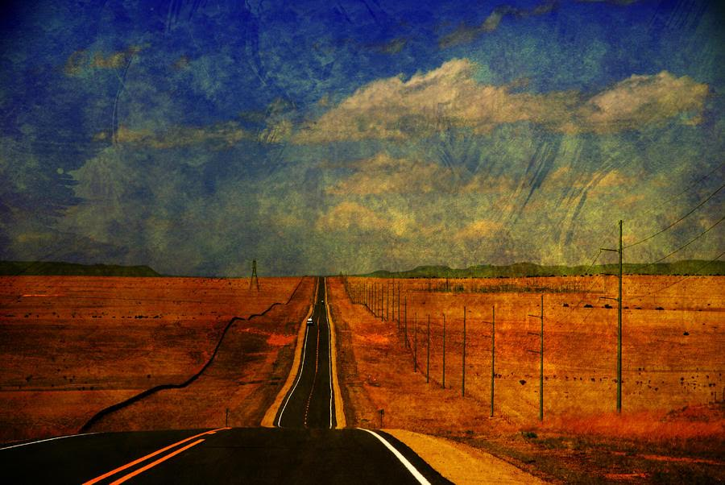

Beginner Photographer

"Nothing behind me, everything ahead of me, as is ever so on the road."
-- Jack Kerouac
The Story Begins From......
"I travelled to Aouth-East Asia, Pacific Ocean, Europe, and finally, America. These different experiences continue refreshing my perspective about culture and about the world, which finally built who I am, and affected my work about digital art a lot." --Fiona
Most of what she said above is not bullshit. But honestly, she falls in love with photography because her dad gave her a Canon and good aesthetic genes. But... it's her website, so just let her say whatever she wants.
I got my first digital camera from my dad before I travel to Thailand. I did some photography in my daily life, but none of them turned out well, cuz everything was the same in my life. I realized that I need to see things from a different angle. And the trip to south-east Asia inspired me to a photographer.

I don't remember what city the bridge is in, but I remember that it was not a good weather and it rained heavily after I took the photo. I took several before this one, but the dim weather made them under-exposed. So I changed some default settings of my camera. Surprisingly, it turned out well.
This is the sunset in Venice Beach, California. That was my last day in Los Angeles, and I found the sunset was so beautiful at Venice Beach. During the days I stayed at LA, I lived 3 minutes from the beach, but never explore the area. Only the last day, I went out for dinner with my friends, and realized how beautiful this place is.
A bird on the CA Highway 1, which is by the sea and is the most beautiful highway I have ever seen. It was also taken during my trip in California. I went there with my uncle and aunt, and we drove from San Francisco all the way to San Diego. The views were amazing but carsick was not so good. But still, everything there was beautiful.
Fall in UW-Madison. Sunrise by the lake. It was not even taken by DSLR, but this place just like have an auto filter. Its beauty needs a song, a poeam, or a film to present it. Gladly, I recorded this moment. I took the picture after a whole night at College Library.